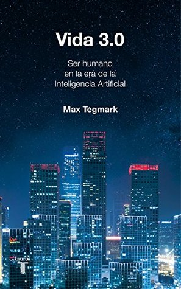

Vida 3.0: Ser humano en la era de la Inteligencia Artificial
Reseña por Jorge I. Zuluaga

Ver reseña en GoodReads (necesita cuenta)
Para empezar, hay que decir que su autor, Max Tegmark, es uno de los pensadores más eclécticos y originales en el mundo de la divulgación científica de —como decimos en Colombia— alto turmequé (especialmente en física, la profesión del profesor Tegmark). Solo podría comparar la originalidad y, al mismo tiempo, la profundidad de lo que escribe con las de otros dos gigantes: Stephen Hawking y Roger Penrose. Debo confesar que hasta ahora no había leído ningún libro completo de Tegmark, pero lo conozco bien por sus artículos científicos y divulgativos, así como por entrevistas y videos.
Vida 3.0 es un texto que aborda los problemas centrales que enfrentamos como especie tecnológica —y que seguramente enfrentarán otras especies del universo llegadas a este punto— ante el desarrollo acelerado de sistemas de IA que alcanzan un alto nivel de agencia; es decir, que persiguen sus propios objetivos y pueden crear cosas nuevas, incluyendo copias mejoradas de sí mismos.
A lo largo de ocho capítulos, el libro aborda preguntas fundamentales: ¿qué es realmente la inteligencia y por qué la asociamos a estos sistemas? Si entidades no biológicas como estas pueden ser inteligentes, ¿es nuestra inteligencia un asunto eminentemente algorítmico? En un mundo dominado por sistemas de IA, ¿qué pasará con el trabajo de los humanos? ¿Cuál será el impacto de estos sistemas sobre las leyes, la información y la guerra? Pensando en el futuro (tal vez mediano), ¿qué pasará cuando algunos de estos sistemas sean tan o más inteligentes que nosotros en todos los aspectos del quehacer intelectual —un umbral que las personas expertas llaman Inteligencia Artificial General (AGI)—? Y más allá, es decir, cuando adquieran independencia y empiecen a mejorarse a un ritmo exponencial hasta hacer risible nuestra propia inteligencia —el límite de la superinteligencia, también llamado singularidad—, ¿cómo será la sociedad? ¿Tendrán «las máquinas» (como también me referiré a estos sistemas con IA) alguna consideración con sus antepasados humanos o buscarán sus propios objetivos, convirtiéndonos en un estorbo para ellas? A una escala cósmica, espacial y temporalmente hablando, ¿cuál es el papel que juegan estas superinteligencias? ¿Son en realidad los sistemas de IA del presente y del futuro entes conscientes? ¿Tienen una experiencia subjetiva?
Siendo un libro de 2018, considero que el texto resulta bastante premonitorio. La mayoría de nosotros, incluyendo muchas personas expertas en la materia, solo empezamos a reconocer y a hablar (en foros, pódcasts y en otros libros) sobre algunos de estos problemas cuando, a finales de 2022, conocimos el primer chatbot con capacidades lingüísticas y de resolución de problemas que creíamos exclusivamente humanas. Me refiero, por supuesto, al lanzamiento de las primeras versiones públicas del sistema ChatGPT de OpenAI. A la fecha, sigue siendo considerado uno de los abanderados en esta tecnología, aunque cada día compite de forma más reñida con una multitud de otros sistemas que ya no se restringen a las capacidades lingüísticas, sino que abarcan una increíble variedad de habilidades cognitivas (sistemas multimodales).
Como aprendemos en la obra, Tegmark y una fundación que creó con el fin de velar por el desarrollo de una IA benéfica, el Future of Life Institute (FLI) —cuyo origen y desarrollo nos describe en detalle en varios apartados—, fueron parte fundamental de los primeros esfuerzos, hace casi una década, para advertir sobre la necesidad de un desarrollo controlado. Como se reconoció desde entonces, y ahora casi todos sabemos, estas tecnologías tienen un poder disruptivo que no habíamos presenciado desde hace un par de siglos. Esto explica perfectamente por qué un libro publicado originalmente en 2018 sigue teniendo tanta vigencia en 2026.
Por supuesto, uno de los conceptos más originales del libro, y el que da origen a su título, es la premisa de que la vida en el universo podría desarrollarse en por lo menos tres niveles, siendo el que estamos presenciando ahora (con el surgimiento de sistemas de IA con agencia) el nivel 3.0. Esta clasificación es una de esas genialidades teóricas a las que Tegmark nos tiene acostumbrados en el mundo de la física y la cosmología, y que hacen que leer sus textos sea tan placentero. Según su taxonomía, la vida 1.0 es aquella cuyo hardware y software son producto de la evolución biológica; es decir, de procesos que podemos llamar naturales (en contraste con los culturales o artificiales). Una muy buena parte de la historia de la vida en la Tierra, incluyendo una fracción significativa de la biósfera, estaría en ese nivel. En el nivel 2.0 estaría la vida cuyo hardware es producto de la evolución, pero que está dotada de un software parcial o totalmente derivado de procesos no naturales (especialmente sociales o culturales). Muchos animales, incluyendo nuestra especie, estaríamos en esta categoría. Finalmente, la vida 3.0 se caracterizaría por ser aquella en la que tanto el hardware como el software son producto de procesos no biológicos. Los sistemas de IA actuales serían las primeras muestras de vida 3.0 que conocemos en la Tierra.
Si los niveles de vida de Tegmark vienen con un dígito decimal (1.0, 2.0, 3.0), ¿significa que hay niveles intermedios? ¡Efectivamente! En la Tierra hay organismos en niveles 1.2, 1.8 o 2.1. Los humanos del presente, por ejemplo, estaríamos en este último peldaño (vida 2.1), en tanto hemos aprendido a modificar nuestros cuerpos (nuestro hardware), acercándonos un poco al nivel 3.0. Los cyborgs —humanos modificados cibernéticamente— típicos de las novelas, películas y series de ciencia ficción, se ubicarían entre los niveles 2.5 y 2.9.
Ahora bien, dada esa clasificación, surge la inevitable pregunta de qué podrá haber por encima del nivel 3.0, o si existirá un nivel 4.0 que ahora ni siquiera podemos imaginar (una vida, por ejemplo, que carezca enteramente de hardware fijo y pueda existir fluctuando en soportes diversos). ¡Las posibilidades para desarrollar y extrapolar estas ideas en el contexto de la astrobiología —mi área de investigación— son sencillamente geniales!
Como mencioné al inicio, sin importar el tiempo que pase, el libro se mantendrá como una referencia fascinante, en gran parte porque incluye un glosario y definiciones estructurales (integradas al texto, en figuras o en tablas) que resultan vitales para navegar estas discusiones con propiedad.
Un aspecto particularmente interesante es la clasificación de las actitudes frente al futuro de la IA y sus efectos sociales (Figura 1.2). Allí se introducen categorías claras: los luditas, quienes consideran que el efecto será netamente negativo y nos golpeará en el mediano plazo; los utópicos digitales, que piensan que los impactos serán positivos y llegarán pronto; los tecnoescépticos, que reconocen no saber qué tipo de efectos vendrán, pero no creen que ocurran sino en un plazo lejano (un siglo o más); y, finalmente, aquellas personas que pertenecen —como el propio Tegmark— al movimiento en pro de una IA benéfica. Estos últimos reconocen la inminente llegada de la revolución de la IA, pero entienden que sus efectos pueden ser positivos o negativos dependiendo exclusivamente de lo que hagamos hoy para prepararnos.
También resulta sumamente útil la Tabla 1.1, que compila las definiciones de muchos términos imprescindibles para sostener una conversación de altura sobre esta problemática. Conceptos como Inteligencia Artificial, Inteligencia Artificial General, IA fuerte, qualia, consciencia, teleología o cyborg, son precisados con gran rigor, ayudando a cimentar la lectura no solo de este libro, sino de cualquier otra literatura técnica sobre el tema.
Finalmente, destaca la Figura 1.5, que recoge los mitos más comunes sobre la IA y sus presuntas amenazas, desmintiendo lugares comunes con las clarificaciones que los expertos y expertas de la disciplina han aportado.
Como buen físico, las explicaciones simplificadas —que no simples— que Tegmark ofrece para conceptos extremadamente escurridizos (como la inteligencia, la memoria, el aprendizaje e incluso la consciencia) son una joya. Están muy bien ilustradas con ejemplos cotidianos que ayudan al lector a interiorizar la física subyacente de la información.
Me encantó que todos los capítulos terminen con una recapitulación estructurada (en forma de lista de viñetas) de las ideas centrales discutidas. Esto, sumado a las bondades mencionadas antes, convierte a Vida 3.0 casi en un texto de estudio que vale la pena leer, releer y conservar religiosamente en la biblioteca para futuras consultas.
El capítulo que más me gustó lleva por título «Objetivos» y aborda, como su nombre indica, el problema de las metas teleológicas que persigue cualquier sistema autónomo, desde los rudimentos de los sistemas biológicos más básicos hasta los objetivos que persiguen los modernos sistemas de IA. ¿Cuáles serán los fines que perseguirá una Inteligencia Artificial General o una superinteligencia? ¿Se alinearán esos objetivos con los valores y la supervivencia de nuestra especie? Para muchos expertos en la materia, incluyendo al autor, el problema de la alineación es posiblemente el reto más acuciante que enfrentaremos de cara al desarrollo exponencial de la IA en los años por venir.
El capítulo más «fuera de lugar» de toda la obra es el titulado «Nuestra herencia cósmica». En él, Tegmark (que no deja de ser un cosmólogo, claro está) lleva la discusión a un futuro y a lugares muy remotos del cosmos. Me imaginé de todo, excepto que me encontraría en un libro sobre IA discusiones sobre la extracción de energía de agujeros negros rotantes, los límites del horizonte de partículas en un universo en expansión acelerada, o disquisiciones sobre la posibilidad de que nuestra civilización esté sola en el universo observable. Si bien me parecieron explicaciones interesantísimas y exóticas —¡y, como astrónomo, las disfruté!—, la verdad es que rompen bastante con el ritmo y el foco del libro.
El último capítulo, dedicado a la consciencia, es también provocador. Les confieso que lo leí por anticipado (justo después de devorar los capítulos 1 a 3 que presentan los conceptos básicos), porque estaba preparando una charla sobre la posibilidad de que los sistemas de IA con los que interactuamos actualmente puedan tener algún tipo de experiencia subjetiva; una consciencia en algún sentido. Aunque me gustó, habiendo leído bastante por esos días para documentar mi conferencia, encontré el capítulo un poco simplista (que no sencillo). Fue un abordaje muy «del estilo de un físico». Aun así, allí residen algunos de los conceptos centrales que hay que dominar, y encontrarán expuestas varias de las teorías más interesantes sobre la naturaleza de la consciencia aplicadas al silicio. De todos los libros que había leído sobre inteligencia artificial, este es el primero que se atreve a tratar un tema tan resbaladizo en extenso.
Naturalmente, hay cosas del libro que no me gustaron mucho, aunque reconozco que algunas de ellas son producto del momento histórico en el que fue concebido.
La primera, y tal vez la más molesta, es la sutil apología que Tegmark le hace a uno de los tecnobros más odiados —y admirados en proporciones casi iguales— del presente: me refiero, por supuesto, a Elon Musk. Como relata el autor, hace más de diez años Musk fue un protagonista clave (especialmente como patrocinador inicial de la FLI y participante de los debates originarios) del surgimiento de las primeras reflexiones serias sobre el futuro de la IA. Siendo un dato histórico, ¿por qué me molesta su inclusión? Lo que rechazo es el tono apologético del texto (que incluye hasta una foto de Musk completamente irrelevante para el contenido técnico). Especialmente ahora, cuando es evidente para el mundo entero que la agenda política y mediática de Musk es todo menos democrática e incluyente; es decir, la antítesis de lo que fundaciones como la FLI afirman perseguir.
Adicionalmente, el poder económico y mediático del que hoy es el hombre más rico del mundo se ha amplificado significativamente desde 2016, hasta el punto de convertirlo en un agente perturbador del equilibrio multilateral global, como ya reconocemos la mayoría. Quienes lo siguen admirando ciegamente están, sin duda, alineados con sus ideologías extremas, o ven en su riqueza y ambiciones el motor de un desarrollo que, trágicamente, solo beneficiará a unos pocos.
Un punto negativo para Tegmark por no haber matizado o corregido este detalle en reediciones recientes, dejando fuera de este pedestal a un magnate que, por sus propias ambiciones políticas y su ideología extrema, se ha excluido del noble objetivo de una inteligencia artificial benéfica.
En síntesis (y disculpen si me he extendido mucho más de la cuenta; ¡gracias a quienes llegaron hasta aquí!), Vida 3.0, a pesar de tener ya sus años, de carecer de datos actualizados (no hay, por razones obvias, una discusión sobre la revolución de los Grandes Modelos de Lenguaje o la IA generativa) y de darle "bomba" a un personaje tan polarizante como Musk, logra desarrollar de manera soberbia, original y accesible los conceptos y debates más urgentes sobre el futuro de la Inteligencia Artificial.
Le auguro muchas reediciones futuras.